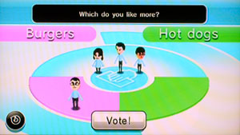
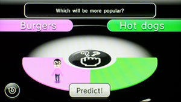

Prediction markets are something that I have been experimenting with and exploring quite a lot recently. I wrote an introduction to prediction markets article which outlines what makes a good and bad market. A very simple, yet powerful, introduction to prediction markets comes from the Nintendo Wii‘s Everybody Votes Channel. This is included in every Wii sold, which accounts for millions of people being potentially exposed to prediction markets.
How it works
The Everybody Votes channel is a prediction market in which you answer a very simple question, casting your vote and then casting a second vote for how you think the outcome will fare. It asks you a variations on the same question. For simplicities sake, every question has only two answers, such as; “Which do you like more: Burgers or Hot dogs?” You then select your answer. If you like “Hot Dogs” more, you’d vote for hot dogs. As you can see, I selected “Burgers”. The system then rephrases the questions to “Which will be more popular: Burgers of Hot Dogs?” In this round I am still predicting that most people will also vote for “Burgers”. This second question is where I can switch to try and match popular opinion rather than my personal wish for the outcome. You, on the other hand, might personally like “Hot Dogs” more, but still think more people will vote for “Burgers”. This is back to the idea of asking not how YOU will vote, but how you think your NEIGHBOR will vote.
These sorts of predictions tends to get better results of the actual outcome because rather than your vested interest in the topic you are predicting other peoples’ and they are doing the same. Nintendo Wii has several questions running at the same time and lets them run for several days before they close it to the public and the results are shown.
The results are broken down by gender and area. If the question was open world-wide they have it broken down by country. This is really interesting because in some countries there is very obvious biases to certain topics which you would probably never predict had you not lived there. Gerard Hendrik Hofstede developed a five dimensional scale for cultural interaction. This looks into each culture on five factors and attempts to rate them on a scale from 1–100. From this it allows you to better predict confrontational, power-distance and other outcomes. They built a simple application they call CultureGPS to help intercultural interactions. Knowing more about the Wii’s Everybody Votes Results would be an interesting look into how well it correlates to the expected societal norms. For instance, maybe food eaten with the hands is considered “unclean”. “Burgers” might be eaten with a knife and fork, whereas “Hot Dogs” would be a social faux paus.
As a prediction market, it isn’t much of a market, but as a simple prediction tool it has larger implications. Without going into lots of maths, this is the basics of Game Theory. John Nash came-up with the simple and elegant concept of a Nash Equilibrium which basically states that when you evaluate your position, you evaluate your opponents and you either stay with your prediction or you switch. As everyone evaluates their positions an equilibrium will occur in which the most optimal outcome is achieved. Obviously, there is alot more to it that just that, he managed to win a Nobel Prize in 01994, so my one or two sentences certainly can’t do it justice. When we look at the Everybody Votes concept, you are first asked for your opinion of the question. Then when you are re-asked in a newly rephrased way, you are evaluating your opponents’ position, in this situation your opponent is all the other people potentially voting. You are given the choice to stay with your original vote or to move in an attempt to come to an equilibrium.
Incentives
As you take part in these surveys, it tracks your answers and your predictions. Using some secret formula, they give you a distance of how far away you are from a “normal” person as well as how well you have your zeitgeist of the populous. If I chose “Burgers” while 99% of the population chose “Hot Dogs” my distance from the norm is increased, but I could still correctly have chosen that most people would pick “Hot Dogs” so I have a pretty good idea of the pulse, even though I may personally disagree with it. Each question is put into one of five categories: Personality, Thoughts, Surroundings, Experience and Knowledge. This allows for a mix of distances you could be away from the norm in various aspects of life.
Having the predictions as a two step process really changes the way we observe outcomes and possibly chance our thought process accordingly. While we may have our strong opinions on a topic, it also allows us to “win” by correctly predicting the outcome even if it is against our opinion. The goal should be prediction accuracy not distance from popular opinion.
As a system to extract and quantify ideas, a simple implementation of “Everybody Votes” is an excellent way to gauge interest and expectations. It is easy enough of a system to conduct on paper within a small office. When estimating project difficultly you are sometimes asked how many man hours it would take to complete. You can vote as an individual, but at the same time you also need to estimate what others are going to say. This way you are not the one under estimating or overestimating reality. In doing so, you are attempting to get to an equilibrium not by what you think the outcome is, but by guessing what you think your neighbor thinks the outcome will be. They are doing the same ad infinitum.
Wii Channels
There is an interview with the team who created the Everybody Vote’s Channel which details some of their thought process. To me, the Wii is on the cutting edge thought provoking ideas. It might seem silly and childish, but ideas such as the customization of the Mii and using it being globally through the system as well as encapsulating advanced ideas such as prediction markets into something as simple as the Everybody Votes Channel. There is a lot to learn from this simplicity of fun and games and how their attributes can be mapped onto complex ideas.
As Brian Sutton-Smith said, “The opposite of play is not work. It’s depression.”